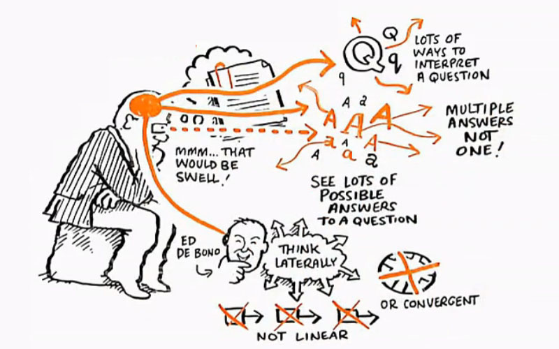

抱歉大家，最近的确也受到近期的社会事情影响，所以慢了些时间发布这篇文章…
上次发了篇文章也收到点回馈…要不，我也说说我对创造力的看法，和一些我认为可以让自己更有想像力创造力的一些办法吧…
首先…要说创造力，我觉得还是要先从分散性思维（Divergent Thinking）说起。分散性思维其实跟我们一般在求学上常运用的聚敛性思维（Convergent Thinking）是很不一样的思考方法。我们其实都很具执行力，因为本身我们已从小锻炼就着一个问题思考出背后的唯一一个答案；而分散性思维的思考模式并不太一样，要总结的话，可试试从以下的几个方向想想吧：

- 一条问题，是不是能有不同的答案？可不可以这样？又可不可以那样？
- 一条问题，其实可以从不同角度去诠释？能不能从令一个角度，可以看出问题其实有不一样的问法吗？
- 深入问题的核心。一个问题背后是什么原因，有什么动机？一直往问题的成因思考可能性…
- 作死的节奏，简单说，就是不容易妥协的态度。为什么是这样？为什么又非要这样？不满足于直接简单的答案。
- 不断的假设。就好像，假如这样的话..会是怎样？那要是那样的话，又会怎样？
说得太抽象了吧…或许，尝试举一个例子吧…（发现，原来要想一个很合适的例子也是很难.. =__=:）
就说说我们常用的手机或ipad的屏幕吧….要想把保护屏幕，可能我们很自然的，就会想，要不加个贴膜，又或是盖不就好了?
这是比较典型的解决问题的思路，想到一个问题，就只针对那个问题寻找一个可接受的最佳答案。
而分散性思维我们关注的问题就不太一檥了，举个例说，我们可能会问以下这些问题：
- 贴膜的话，会否就是真的解决了问题？有没有更好的方法？
- 为什么我们要去保护屏幕？不想弄花背后的原因和忧虑是什么？要是因为想保值的话，是否我真的会拿去卖？OK…就算想卖的话，其实会不会有更简单直观的用其他方向解决我的「忧虑」，而不是解决不想弄花屏幕这个表象问题？
- 要是用盖旳话，发现在床上拿着看时，其实挺碍事的，为什么非要那个盖缠着我看东西？（我想，iPad cover就是这样从启发出来，我觉得那个磁石扣是一个很了不起的设计，惊叹为什么那么多年都没尝试从这个方向想过…)
整个过程更多是像一个冥想（meditation）的状态，每次尝试发觉自己的疑问，就算每次想同一个问题时，都会有不同的假设，不同的方向，诱发出不同的答案，不同的可能性，我们要找的，不是一个答案，其实更多是，找寻一个灵光一闪、有趣的、与别不同的假设。
同时间，我一直反感每一件事情都要一个套路，一套法则，这不是分散性思维的精髓，把经验积累成教条方法本身已是一个聚敛的过程，每次跟随这个套路无疑只是在学校或工作职场一直训练您的思维模式，也把你的想像力规范在一个框架内了，其实在一开始就已经遗背了本义，也是我在国内看到过最多自以为这是创造性思维最大的错误。
其实要说准的话，这个尝试总结的办法，其实解决的，可能不是问题本身，更多的，或许只是解决了他心中没法掌握操控的焦虑而已。
创意，是需要沉淀的
那可能大家也会问，就算以上有些我都知道了，为什么总觉得不够创意？或不够别人想得好？其实主要原因很可能在于，在一开始，习惯和心态就跟他们有着根本的分别。
为什么这样说？其实大部份的人，通常要到了他意识到一个很具体的问题时，才会去想有什么应对的方法，或再深入点的，就是先未雨绸缪，但通常都还是会就着围绕一个突定的主题去探索。
但，创意的点子更多的，其实就是生活的积累，是一个习惯。要说主题的话，是生活吧…生活上不着边际的探索。其实这句话真不是装还是作啦，主要我的意思是，要真的去用心感受世界上每一样对你有感觉的事情，当任何一件事情能走进你的视嘢并留下印象，或任何让你去注意、在意或产生感觉的时候，就去用心思考你自己本身跟那件事件或物件的感情联系在那。这不是一天两天就有成效，而是日积月累的修为。
这样的做法，除了能帮助自己在发掘问题的灵敏度外 ，一天一天把这些碎片式的想法积累，可能因为几个不一样的点子的联系启发出新的想法，也同时让您当遇上什么问题时，脑子里的所谓灵感，往往就是把事情跟以往的各种想法感觉联系重新回想起来。
跟敏捷相违背？
又来了另一个矛盾，我常常都说要想清楚，但同时在工作上，当然不能议而不决，只想不做。那岂不是，设计跟现在主流的迅速应对思想，如敏捷（Agile）、Lean等，相互冲突吗？
我觉得得要事情到了什么阶段吧。当一件事情在刚开始或进任下一个阶段，或在一个瓶颈的时候，就是最需要新的想法和创造力的时候。
要是在这些时候，在概念还是模糊未成形的时候，通常进度的压力没有那么大，其实这段时候，刚好好思考清楚，好好运用创意，选取一个相对比较好的大方向（而不是结论）。因为大方向就好比一栋建筑物的根基，中途更改，其实是更大的浪费。也像我之前的一篇文章也提过，引用过爱恩斯坦的一番话：
I'd spend 55 min. defining the problem & only 5 min. finding the solution.
那95%在我看，就是在思考那個策略和方向，而那5%就是Agile/Lean的範疇了。當然，那5%的執行階段，當然也可細分為不斷分散和聚斂思考的，但相對由於沒有涉及什麼大方向的思考，花費的時間和精力就會少得多…
那95%是否代表非要花很多的時間嗎？我覺得倒不然，我的看法是精力放在前期要多得多的意思。其實，想事情不會花您太多時間，要是用上一整天的精力去想事情的話，能想出來的東西還是可以很多的，問題只是，能不能想出來而已。
当然…在职场上，当然，不可能每一刻情况都那么完美。也常常需要一个短时间内，需要帮助一个团队创意爆发。我们通常会做一些创意启发的工作坊，通过游戏风暴（Game storming）或一些不同的互动活动，帮助团队一起去启发并一起创建达成意见，有机会的话，跟大家说多点吧… :p
| ＜上一篇 |